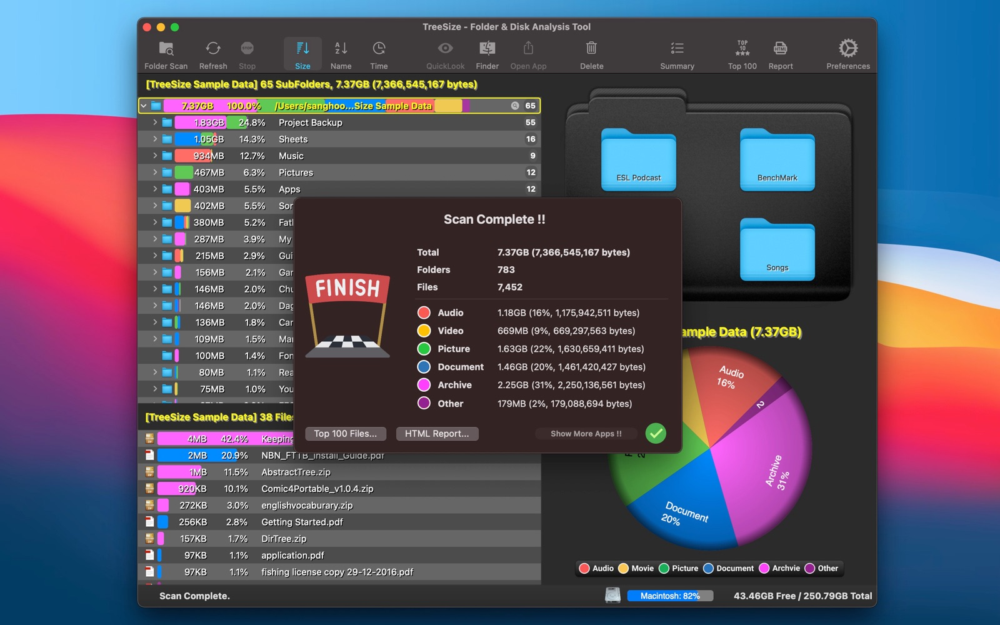
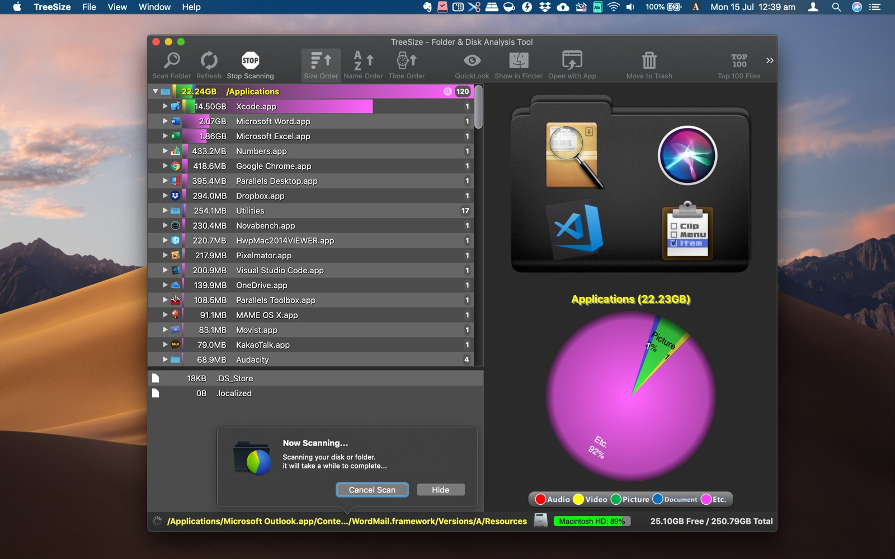
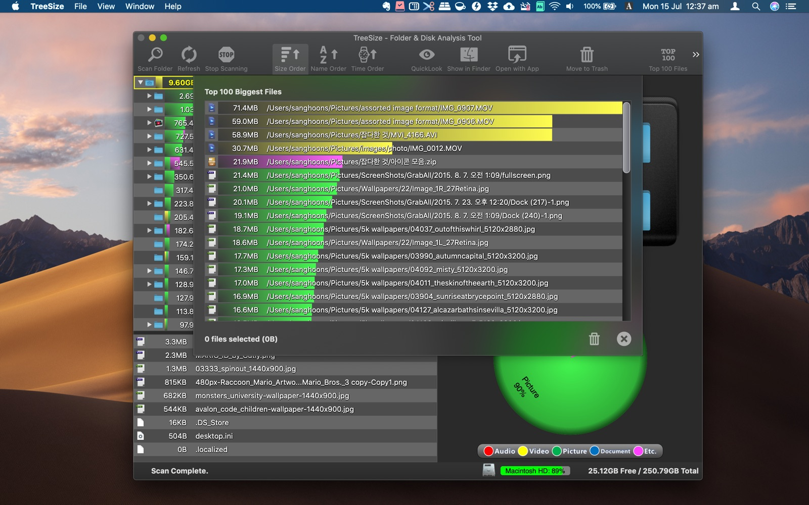

See where space goes
Scan any folder or volume and browse a size-sorted tree with color bars, so large folders stand out immediately.
Mac App Store · Utilities
Disk Usage Analysis Tool
See what is using space on your Mac — then clean it up with confidence.

Finder is great for opening files — not for answering where your disk space went. TreeSize makes that answer obvious.
Scan any folder or volume and browse a size-sorted tree with color bars, so large folders stand out immediately.
Switch between tree map and pie chart views to understand composition by folder or file category — Audio, Video, Picture, Document, Archive, and more.
Jump to Top 100 files, find likely duplicates, Quick Look contents, reveal in Finder, or move items to Trash — without leaving the app.
Scan & explore
Drop a folder or disk onto TreeSize — or open it from the toolbar — and watch the hierarchy fill in as the scan runs. Sort by size, name, or date. Live progress and free/total disk indicators keep you oriented.

Insights & cleanup
After a scan, open Top 100 Biggest Files to spot space hogs quickly. The duplicate finder groups candidates by name and size so you can review potential savings before deleting.

Share results
Generate a report with the folder tree and charts — useful when you want to review results outside the app or share findings with someone else.
Drag and drop, open from the toolbar, or launch from Finder’s Services menu.
Browse the tree, switch tree map or pie chart, and drill into the folders that matter.
Review Top files or duplicates, preview with Quick Look, then remove what you no longer need.
Native macOS utility by woojooin. Continuously updated — including faster scanning, tree map, pie charts, duplicate finder, and HTML reports.
I am the author and developer of TreeSize for Mac. I design, ship, and maintain the product end to end — from scanning and visualization to App Store releases and localization.
Built as a native Mac app with Objective-C and AppKit.